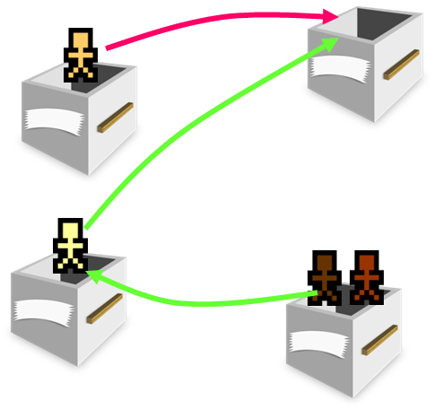

The dispersion module was developed to satisfy a need for chaotic behaviour in peeps. In our RNS case study, one aspect of the model was of children playing in a courtyard. Such behaviour is difficult to model directly.

Instead, the dispersion module was developed which allowed the environment itself to direct the children peeps to move about in a pseudo-random fashion.
Any given cell can be given a list of dispersion targets. At each simulated tick, every peep within the origin cell is relocated to a random target cell. In the case of RNS the courtyard was divided into four quadrants, each of which dispersed into the others.
The dispersion module was later expanded with the capability to discriminate between peeps based on masking; peeps could have their destination selected from a specific set of cells based on an attached mask.
To date, the dispersion module has been employed in simulating children playing (as already noted), movement of workers within a high-rise office building, progress through a train station and even the path of airborne contagions.